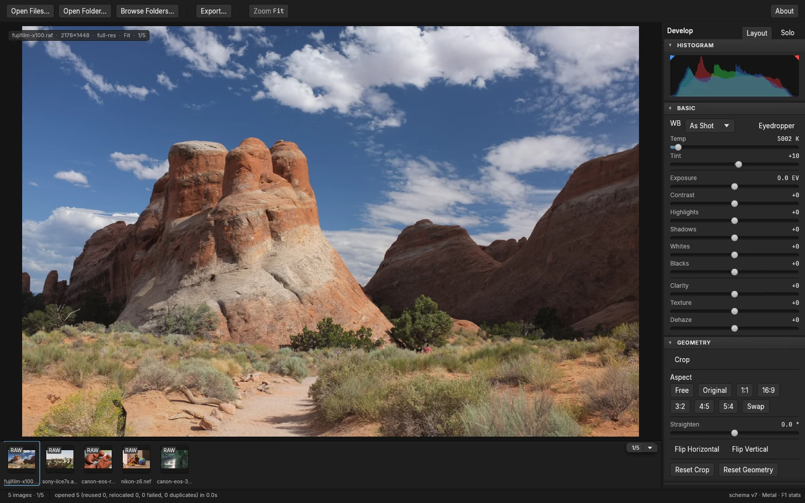

Open source raw editor No catalogue No subscription
Drag a photo in.
You are already editing.
Lightbox is a raw editor with no catalogue and no import step. Drop a file or a whole folder on the window and the develop panel opens on it, with everything you brought sitting in the filmstrip. Your original file is never moved or written to, so there is no save button and nothing to overwrite. Export when you want a copy to send out.
Free software under the AGPL. Download it for macOS, or build it from source. A commercial licence is available for companies building on it.

01 Getting in
There is nothing to import into.
Most editors want a library before they will let you work. Lightbox skips that step on purpose. Drag a file, a selection, or a folder onto the window and the editor opens on it, with a filmstrip of whatever you brought. Nothing is copied and your photographs stay exactly where you left them on disk. Lightbox does keep a small local record of what you have opened, because that is what carries your edits back to a file you renamed or moved, and there is no catalogue to browse, curate or maintain.
- DropFiles, a selection, or a folder. There is an ordinary open dialog too, and a folder browser if you would rather navigate to things. A Dropbox or Drive folder is just a folder, so those work today.
- EditThe picture is on screen straight away and swaps to the full render a moment later. Nothing waits behind a progress bar.
- Come back laterLightbox recognises a photograph by its contents, not by its filename. Rename it, move it to another drive, open it again next year, and your edit is still on it.
02 The develop rail
Ten panels, and all of them are built.
Lightbox is not trying to be an everything app. It is trying to be very good at turning a capture into the picture you saw when you pressed the shutter. Ten panels dock in the rail, and every one of them can be dragged to either side, collapsed, soloed or switched off.
- HistogramLive RGB overlay and clip indicators
- BasicWhite balance, tone, presence
- GeometryCrop, aspect, straighten, flip
- Tone CurvePoint and parametric, composite and per channel
- HSLEight hue bands, hue, saturation and luminance each
- B&WTreatment toggle and an eight channel mixer
- Color GradingFour wheels, blending and balance
- Creative LooksYour own LUTs, installed and browsable
- HistoryEvery step, and named snapshots
- PresetsThirty-six bundled, plus everything you make
One thing to know before you download. The editor currently grades the finished JPEG your camera embedded in the raw file, and not yet on the sensor data behind it. Full raw decoding through LibRaw is built and bundled, and today only lightbox-cli reaches it. Wiring the sensor path into the editor is the next thing being built.
03 Looks
Thirty-six looks, and every one of them opens.
A look in Lightbox is not a filter laid over your photograph. It is a set of slider positions. Apply one and every control moves to where that look put it, so you can see how it was built and carry on editing from there, which is the part a baked filter cannot give you.
Every frame below was rendered by Lightbox itself, on the same photograph, and the numbers are read straight out of the preset files that ship with the app.
As shotNo grade applied
- No values. This is the file as it came off the card.
GlasshouseTonal
- Contrast-4
- Highlights+8
- Shadows+24
- Whites+22
- Blacks+4
Super 8Retro
- Contrast+18
- Highlights+32
- Shadows+10
- Whites-22
- Blacks+6
- Vibrance-4
- Saturation-8
Sunday ChromeRetro
- Contrast+12
- Highlights+26
- Shadows+16
- Whites-20
- Blacks+18
- Vibrance-8
- Saturation-6
Noir GrainMono
- Contrast+46
- Highlights+28
- Shadows-24
- Whites-16
- Blacks-28
- Saturation-100
Neon RainNeon
- Contrast+26
- Highlights+26
- Shadows-10
- Whites-16
- Blacks-24
- Vibrance+14
- Saturation-4
Moss and SlateVerdant
- Contrast+16
- Highlights-26
- Shadows+12
- Whites-6
- Blacks-8
- Vibrance-6
- Saturation-10
Concrete BrutalEdge
- Contrast+42
- Highlights+36
- Shadows-22
- Whites-16
- Blacks-32
- Vibrance-6
- Saturation-18
Fog BankAtmosphere
- Contrast-34
- Highlights-10
- Shadows+30
- Whites-26
- Blacks+34
- Vibrance-20
- Saturation-26
Nine of the thirty-six shown. Seven families ship: Atmosphere, Edge, Mono, Neon, Retro, Tonal and Verdant. You can install your own .cube or HaldCLUT files, save any edit as a preset, and import or export presets as XMP.
04 The command line
The same engine, with no window on it.
lightbox-cli is the whole pipeline as a command. It loads a folder, sets values, applies a look, writes sidecars and exports the set, without opening the editor once. It ships inside the app and finds the raw decoder on its own, so there is nothing to install and nothing to configure.
# Load a folder. Nothing is copied and nothing is moved.
lightbox-cli open ~/Pictures/shoot --recursive \
--store ~/Pictures/shoot/work.lbdata --json
# Set tone on one frame
lightbox-cli edit set --catalog ~/Pictures/shoot/work.lbdata \
--image 1 exposure=0.35 contrast=12
# Write an XMP sidecar next to the original
lightbox-cli xmp write --catalog ~/Pictures/shoot/work.lbdata --image 1
# Export it
lightbox-cli export --catalog ~/Pictures/shoot/work.lbdata --image 1 \
--out out.jpg --format jpeg --quality 92 --long-edge 2048 \
--color srgb --sharpen standardSTORE=~/Pictures/shoot/work.lbdata
# Load the folder and keep the id of every frame it found
lightbox-cli open ~/Pictures/shoot --recursive --store "$STORE" --json \
| jq -r 'select(.image) | .image' > ids.txt
# Find a bundled look by name, then put it on all of them
LOOK=$(lightbox-cli preset list --catalog "$STORE" --json \
| jq -r '.[] | select(.name == "Fog Bank") | .id')
while read -r id; do
lightbox-cli preset apply --catalog "$STORE" --image "$id" --id "$LOOK"
done < ids.txt
# Export the set in one pass
lightbox-cli export --catalog "$STORE" --images "$(paste -sd, ids.txt)" \
--out-dir ./out --format jpeg --quality 92 --long-edge 2048--json
Built to be piped
Every command that reports anything takes --json and prints one object per record, so jq reads it without any parsing on your side.
0 1 2 3
Exit codes that mean something
0 success, 1 failure, 2 usage error, 3 catalog corrupt or refused. A build script can tell a typo from a bad file without reading the output.
4310 × 2870
This is where the sensor data is
The editor window grades the finished JPEG your camera embedded in the raw file. On the repository's Fujifilm X100 fixture that preview is 2176 by 1448. lightbox-cli decodes the sensor instead, and gets 4310 by 2870. Today the command line is the only way to reach it.
Building Lightbox into something you ship? Read the licence in the repository, or write to licensing@pixelabs.net.
05 Your work
Your original is never touched.
Lightbox does not save over your photograph, because it never writes to it in the first place. Your edits are a list of values kept in a small file of their own, and the picture on screen is those values applied to the original as it is drawn. The file you imported is opened read-only and stays byte for byte as it came off the card.
- Want the original back? Open the History panel and click the first entry, or press undo until you reach it. The photograph returns to exactly as shot, because that is the only version that was ever on disk.
- Want a copy to send someone? Export writes a new file, in JPEG, PNG or TIFF, at whatever size and quality you choose. It leaves the original alone.
- Want two versions? Named snapshots keep as many as you like on one photograph, and you can jump between them.
- Undo goes as far back as you like, and it is still there tomorrow.
- XMP sidecars sit next to the photograph, if you want other software to read your edits. They are a separate file too.
Everything is written down the moment you make it, so there is nothing to lose by forgetting to save. Pull the power cord mid-session and the picture comes back where you left it. That is not a claim to take on trust: the test suite kills the program mid-edit, on purpose, over and over, and checks that nothing was lost.
Your edits are values, not baked pixels. They sit in a small file on your own disk, and they can be written alongside the photograph as a sidecar. Nothing is held on a server, nothing expires, and there is no subscription that can switch the program off. The source is public, so the format and the arithmetic are both there to read.
Lightbox does not send anything anywhere today. When it starts reporting anonymous usage figures, so we can see which controls people actually reach for, you will be asked on the first run and you will be able to say no. It will never include your files, your filenames, or anything from inside your photographs.
- Warmer, liftedsnapshot
- Vibrance+21
- Shadows+34
- Highlights−38
- Straight out of camerasnapshot
- Exposure+0.30 EV
- White balance5442 K
- Openedas shot
06 Honest status
Where the project actually is.
Lightbox is pre-1.0 and moving. Below is the whole picture: what you get if you build it today, what does not exist yet, and where it has and has not actually been run. Nothing in the middle column is described anywhere else on this page as though it works.
Working today
- Drag and drop, open dialog and folder browsing
- Raw files from Canon, Nikon, Sony, Fujifilm, Olympus, Pentax and DNG CR2 CR3 NEF ARW RAF ORF PEF DNG
- JPEG, PNG and TIFF through the same pipeline
- White balance, exposure, contrast, highlights, shadows, whites and blacks
- Parametric and point tone curves, per channel
- HSL, vibrance, saturation and three-way colour grading
- Clarity, texture, dehaze and a black and white mixer
- Crop, straighten and flips with an interactive gizmo
- Creative LUTs from
.cubeand HaldCLUT files - 36 bundled presets, plus your own, with XMP import and export
- History, snapshots and crash-safe persistence
- Export to JPEG, PNG and TIFF with resize, depth, colour space and sharpening
- Dockable panels, full theming, remappable keyboard, preferences
- A headless CLI that drives the whole pipeline
Not built yet
- Masking and local adjustments
- Healing, cloning and removing things
- Noise reduction and sharpening
- Lens corrections and perspective
- Any AI at all
- A demosaic of our own
- Camera colour profiles
- A before and after view
- Watermarking and metadata on export
- Signing in to cloud storage from inside Lightbox
Masking and local adjustments are not built, and they are the next thing we want to build. There is no date on them. When AI arrives it will run on your own machine and hand you sliders you can move, not a finished picture you cannot take apart. Cloud storage would point at your storage account, not ours.
Before you download it
- The editor works on the preview your camera embedded, not yet on the sensor data. Every raw file carries a finished JPEG inside it so the camera has something to put on its own screen, and that is what the editor currently grades. The canvas says so, in the badge under the image. Full sensor decoding is built and shipped, and today only
lightbox-clireaches it. Wiring it into the editor is the next thing we are building. - macOS on Apple Silicon is the only platform anyone has really used. Every measurement and every crash drill in the repository was done there.
- No camera profiles ship yet. The editor grades the preview your camera embedded, which is already in a standard colour space, so a per-camera matrix has nothing to act on until sensor decoding is wired into the editor. Building real profiles needs physical colour targets, and we have not done it.
07 Get it
Download it and drag it to Applications.
Apple Silicon Macs, macOS 11 and later. Raw decoding is built in, so there is nothing to install alongside it and nothing to configure. Building from source stays supported and is written up in the repository.
macOS will say it is damaged. It is not.
Lightbox is not signed with an Apple certificate yet, and macOS words that refusal badly. Drag Lightbox to Applications, then paste this into Terminal once:
xattr -dr com.apple.quarantine /Applications/Lightbox.appIt opens normally from then on. The same note is inside the disk image, next to the app, and every release publishes a SHA-256 fingerprint if you would rather check the download first.
Build it yourself
The compiler version is pinned in the repository, so rustup fetches the right one on the first run. LibRaw is only needed if you want the decoder in your own build.
git clone https://github.com/thepixelabs/lightbox
cd lightbox
brew install libraw
cargo xtask fixtures
cargo xtask bundle-mac --with-libraw --installThat produces the same Lightbox.app the download gives you, in /Applications.
Drive it from a script
lightbox-cli is the whole engine with no window on it, and it is the one place full sensor decoding is wired up today. It ships inside the app, at /Applications/Lightbox.app/Contents/MacOS/lightbox-cli, and finds the decoder without any setup.
lightbox-cli open ~/Pictures/shoot --recursive --store shoot.lbdata
lightbox-cli edit set --catalog shoot.lbdata --image 1 exposure=+0.35 contrast=+12
lightbox-cli export --catalog shoot.lbdata --image 1 --out out.jpg \
--format jpeg --quality 92 --long-edge 2048Lightbox is built for macOS. Windows and Linux compile and pass the full test suite on every commit, and nobody has sat down and edited a photograph on either one, so treat them as untested rather than supported. If you run Lightbox on one of them, we would genuinely like to hear how it went.
08 Contributing
Pull requests are welcome.
Every change has to pass five gates: it builds, the tests pass, clippy is clean with warnings denied, the formatting matches, and the dependency licences check out. That is the whole bar. Read CONTRIBUTING.md before you start on anything large, because the project keeps written specs and a log of where the code drifted from them, and matching that habit makes a change much easier to take.